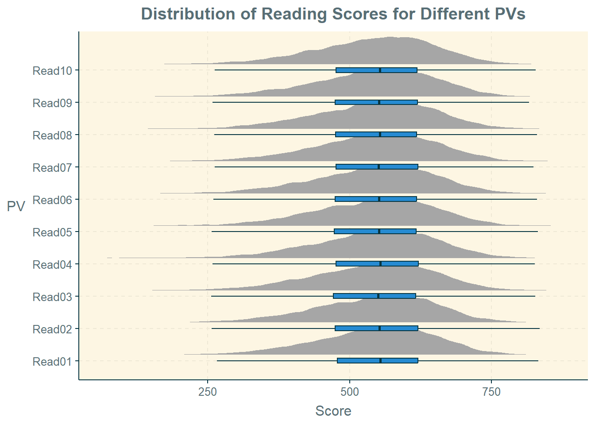
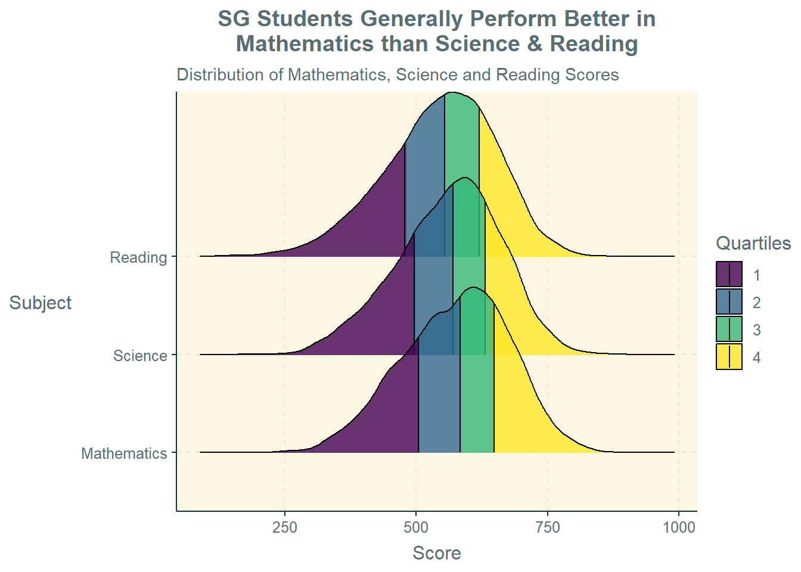

pacman::p_load(haven, tidyverse, reshape2,
ggthemr, ggridges, ggdist,
ggpubr)Take-home Exercise 1
Creating Data Visualisation Beyond Default: Investigating Singapore Students’ Performance for PISA 2022
1 Introduction
1.1 Background
Singapore has come a long way since gaining independence in 1965. Without natural resources, human capital development through a well-planned education system is a critical part of Singapore’s transformation from third world to first.
Despite the success, there is still a correlation between socio-economic status and education achievement, as well as ingrained perceptions that some schools are better than others.
Hence, there is a need to use data to analyse the performance of Singapore students across different subjects, and identify any relationships between the performance in various subjects and factors such as gender, socioeconomic status, and type of school.
1.2 Objective and the Analytical Questions
In this take-home exercise, the objective is to use the appropriate Exploratory Data Analysis (EDA) methods and ggplot2 functions (part of the amazing tidyverse ecosystem) to answer the following analytical questions:
What is the distribution of Singapore students’ performance in Mathematics, Reading, and Science? What are the similarities and/or differences between the distributions for the three different subjects?
Are there relationships between the students’ performance in the three subjects and factors such as their gender, socioeconomic status, and school? If yes, what kind of relationships are present?
Based on the analysis and observations, this take-home exercise also briefly suggests the potential insights can be further studied in future research to better inform education policy planning.
2 Getting Started
2.1 Setting the Analytical Tools
The R packages used in this take-home exercise are:
haven for importing SAS files;
tidyverse (i.e. readr, tidyr, dplyr, ggplot2) for performing data science tasks such as importing, tidying, and wrangling data, as well as creating graphics based on The Grammar of Graphics;
reshape2 for transforming data between wide and long formats;
ggthemr for aesthetic themes created by user, Ciarán Tobin;
ggridges for creating ridgeline plots;
ggdist for visualising distributions and uncertainty; and
ggpubr for creating publication ready ggplot2 plots.
The code chunk below uses the p_load() function in the pacman package to check if the packages are installed in the computer. If yes, they are then loaded into the R environment. If no, they are installed, and then loaded into the R environment.
The ggthemr() function in the ggthemr package is used to set the default theme of this take-home exercise as “solarized”.
ggthemr("solarized")2.2 Data Sources
The OECD Programme for International Student Assessment (PISA) measures how well 15-year-old students in different countries are “prepared to meet the challenges of today’s knowledge societies” by looking at “their ability to use their knowledge and skills to meet real-life challenges”. The PISA surveys take place every three years, the latest being conducted in 2022.
The PISA 2022 database contains the full set of responses from individual students, school principals, and parents. There are a total of five data files and their contents are as follows:
Student questionnaire data file;
School questionnaire data file;
Teacher questionnaire data file;
Cognitive item data file; and
Questionnaire timing data file.
For the purpose of this take-home exercise, the “Student questionnaire data file” is used.
3 Data Wrangling
3.1 Importing Data
The dataset used in this take-home exercise is the 2022 PISA student questionnaire data file, cy08msp_stu_qqq.sas7bdat, which is in the SAS file format.
The file is imported into the R environment using the read_sas() function in the haven package and stored as the R object, stu_qqq.
stu_qqq = read_sas("data/cy08msp_stu_qqq.sas7bdat")The tibble data frame, stu_qqq, has 1,279 columns (variables) and 613,744 rows (observations).
3.2 Filtering for Singapore Observations
There are 6,606 rows with the country code (i.e., CNT) value of “SGP”, which represents Singapore. This count is cross-verified by the information provided in the “CY08MSP_STU_QQQ” sheet in the codebook. The codebook also stated that Singapore students’ made up 1.0763% of the entire global student population who took part in the 2022 PISA.
The filter() function in the dplyr package is used to obtain these rows, and stored as the R object, stu_qqq_SG.
stu_qqq_SG = stu_qqq %>% filter(CNT == "SGP")The tibble data frame, stu_qqq_SG, is then saved in the rds file format and imported into the R environment.
write_rds(stu_qqq_SG, "data/stu_qqq_SG.rds")stu_qqq_SG = read_rds("data/stu_qqq_SG.rds")3.3 Filtering for Relevant Variables
Of the 1,279 variables (columns), the following 36 are preliminarily selected to answer the analytical questions:
International School ID (“CNTSCHID”);
International Student ID (“CNTSTUID”);
Type of School (“STRATUM”);
“SGP01” is Public Secondary School.
“SGP03” is Private Secondary School.
Student Gender (“ST004D01T”);
“01” is Female.
“02” is Male.
Index of Economic, Social, and Cultural Status (“ESCS”);
Number of Books at Home (“ST255Q01JA”);
“01” is no books”.
“02” is 1-10 books.
“03” is 11-25 books.
“04” is 26-100 books.
“05” is 101-200 books.
“06” is 201-500 books.
“07” is more than 500 books.
Plausible Values 1 to 10 in Mathematics (“PV1MATH” to “PV10MATH”);
Plausible Values 1 to 10 in Reading (“PV1READ” to “PV10READ”); and
Plausible Values 1 to 10 in Science (“PV1SCIE” to “PV10SCIE”).
Again, the select() function in the dplyr package is used to obtain these rows, and stored as the R object, stu_qqq_SG_final.
stu_qqq_SG_final = stu_qqq_SG %>%
select("CNTSCHID", "CNTSTUID", "STRATUM", "ST004D01T", "ESCS", "ST255Q01JA",
"PV1MATH", "PV2MATH", "PV3MATH", "PV4MATH", "PV5MATH", "PV6MATH",
"PV7MATH", "PV8MATH", "PV9MATH", "PV10MATH", "PV1READ", "PV2READ",
"PV3READ", "PV4READ", "PV5READ", "PV6READ", "PV7READ", "PV8READ",
"PV9READ", "PV10READ", "PV1SCIE", "PV2SCIE", "PV3SCIE", "PV4SCIE",
"PV5SCIE", "PV6SCIE", "PV7SCIE", "PV8SCIE", "PV9SCIE", "PV10SCIE")3.4 Checking for Duplicates and Missing Values
The dataset from PISA is expected to be relatively clean. Nevertheless, due diligence checks for duplicates and missing values are still made to confirm the assumption.
The duplicated() function in the base package is used to check for duplicates in stu_qqq_SG_final. There are no duplicates in the tibble data frame.
stu_qqq_SG_final[duplicated(stu_qqq_SG_final), ]# A tibble: 0 × 36
# ℹ 36 variables: CNTSCHID <dbl>, CNTSTUID <dbl>, STRATUM <chr>,
# ST004D01T <dbl>, ESCS <dbl>, ST255Q01JA <dbl>, PV1MATH <dbl>,
# PV2MATH <dbl>, PV3MATH <dbl>, PV4MATH <dbl>, PV5MATH <dbl>, PV6MATH <dbl>,
# PV7MATH <dbl>, PV8MATH <dbl>, PV9MATH <dbl>, PV10MATH <dbl>, PV1READ <dbl>,
# PV2READ <dbl>, PV3READ <dbl>, PV4READ <dbl>, PV5READ <dbl>, PV6READ <dbl>,
# PV7READ <dbl>, PV8READ <dbl>, PV9READ <dbl>, PV10READ <dbl>, PV1SCIE <dbl>,
# PV2SCIE <dbl>, PV3SCIE <dbl>, PV4SCIE <dbl>, PV5SCIE <dbl>, …The colSums() function in the base package is used to check for missing values in stu_qqq_SG_final. There are no missing values in the tibble data frame for all most columns except for two:
The column with the Index of Economic, Social, and Cultural Status (“ESCS”) has 47 rows (observations) with NA values.
The column indicating the number of books at home (“ST255Q01JA” has 44 rows (observations) with NA values.
In total, there are 50 rows with one or more NA values. As this makes up only 0.757% of the 6,606 observations, we will remove them from the subsequent analysis. The na.omit() function in the stats package is used to remove them from stu_qqq_SG_final, which now has 6,556 observations and 36 variables. A confirmatory check is then made with the colSums() function in the base package.
colSums(is.na(stu_qqq_SG_final)) CNTSCHID CNTSTUID STRATUM ST004D01T ESCS ST255Q01JA PV1MATH
0 0 0 0 47 44 0
PV2MATH PV3MATH PV4MATH PV5MATH PV6MATH PV7MATH PV8MATH
0 0 0 0 0 0 0
PV9MATH PV10MATH PV1READ PV2READ PV3READ PV4READ PV5READ
0 0 0 0 0 0 0
PV6READ PV7READ PV8READ PV9READ PV10READ PV1SCIE PV2SCIE
0 0 0 0 0 0 0
PV3SCIE PV4SCIE PV5SCIE PV6SCIE PV7SCIE PV8SCIE PV9SCIE
0 0 0 0 0 0 0
PV10SCIE
0 stu_qqq_SG_final = stu_qqq_SG_final %>%
na.omit()colSums(is.na(stu_qqq_SG_final)) CNTSCHID CNTSTUID STRATUM ST004D01T ESCS ST255Q01JA PV1MATH
0 0 0 0 0 0 0
PV2MATH PV3MATH PV4MATH PV5MATH PV6MATH PV7MATH PV8MATH
0 0 0 0 0 0 0
PV9MATH PV10MATH PV1READ PV2READ PV3READ PV4READ PV5READ
0 0 0 0 0 0 0
PV6READ PV7READ PV8READ PV9READ PV10READ PV1SCIE PV2SCIE
0 0 0 0 0 0 0
PV3SCIE PV4SCIE PV5SCIE PV6SCIE PV7SCIE PV8SCIE PV9SCIE
0 0 0 0 0 0 0
PV10SCIE
0 3.5 Renaming Columns and Replacing Values
For ease of use, the columns are renamed accordingly using the rename() function in the dplyr package.
stu_qqq_SG_final = stu_qqq_SG_final %>%
rename(School = "CNTSCHID",
SchoolType = "STRATUM",
ID = "CNTSTUID",
Gender = "ST004D01T",
SocioeconStatus = "ESCS",
Books = "ST255Q01JA",
Math01 = "PV1MATH", Math02 = "PV2MATH",
Math03 = "PV3MATH", Math04 = "PV4MATH",
Math05 = "PV5MATH", Math06 = "PV6MATH",
Math07 = "PV7MATH", Math08 = "PV8MATH",
Math09 = "PV9MATH", Math10 = "PV10MATH",
Read01 = "PV1READ", Read02 = "PV2READ",
Read03 = "PV3READ", Read04 = "PV4READ",
Read05 = "PV5READ", Read06 = "PV6READ",
Read07 = "PV7READ", Read08 = "PV8READ",
Read09 = "PV9READ", Read10 = "PV10READ",
Sci01 = "PV1SCIE", Sci02 = "PV2SCIE",
Sci03 = "PV3SCIE", Sci04 = "PV4SCIE",
Sci05 = "PV5SCIE", Sci06 = "PV6SCIE",
Sci07 = "PV7SCIE", Sci08 = "PV8SCIE",
Sci09 = "PV9SCIE", Sci10 = "PV10SCIE")Also, for the ease of use, the values for Gender, School Type, and Number of Books are replaced with characters using the ifelse() function in the base package.
stu_qqq_SG_final$Gender = ifelse(
stu_qqq_SG_final$Gender == 01,
"Female", "Male")
stu_qqq_SG_final$SchoolType = ifelse(
stu_qqq_SG_final$SchoolType == "SGP01",
"Public", "Private")
stu_qqq_SG_final = stu_qqq_SG_final %>%
mutate(Books = recode(Books,
"01" = "0 Book",
"02" = "1-10 Books",
"03" = "11-25 Books",
"04" = "26-100 Books",
"05" = "101-200 Books",
"06" = "201-500 Books",
"07" = ">500 Books"))3.6 Deciding on Plausible Values to Use
There are 10 Plausible Values (PVs) each for Mathematics, Reading, and Science. However, PISA cautions against averaging the PVs at the student level. Instead, it suggests that population statistics should be estimated using each PV separately - e.g., if one is interested in the correlation coefficient between the social index and the reading performance in PISA, 10 correlation coefficients should be computed and then averaged.
A combination of half-density plot and box plot are plotted for the each of the 10 PVs for each subject. Firstly, the select() function in the dplyr package and the melt() function in the reshape2 package are used to select the relevant columns and transform them into a long table. The variables are then renamed using the rename() function in the dplyr package.
The ggplot(), geom_boxplot(), coord_flip() functions in the ggplot2 package, and the stat_halfeye() function in the ggdist package are used to create the plots. The ggtitle() and theme() functions in the ggplot2 package are then used to make aesthetic adjustments to insert the plot title, centre the plot title, and rotate the y-axis label.
Code
math = stu_qqq_SG_final %>%
select(Math01, Math02, Math03, Math04, Math05,
Math06, Math07, Math08, Math09, Math10) %>%
melt() %>%
rename("PV" = "variable", "Score" = "value")
ggplot(math,
aes(x = PV,
y = Score)) +
stat_halfeye(adjust = 0.5,
justification = -0.2,
.width = 0,
point_colour = NA) +
geom_boxplot(width = .15,
outlier.shape = NA) +
coord_flip() +
ggtitle("Distribution of Math Scores for Different PVs") +
theme(plot.title = element_text(hjust = 0.5),
axis.title.y = element_text(angle=360,
vjust=.5, hjust=1))
Code
read = stu_qqq_SG_final %>%
select(Read01, Read02, Read03, Read04, Read05,
Read06, Read07, Read08, Read09, Read10) %>%
melt() %>%
rename("PV" = "variable", "Score" = "value")
ggplot(read,
aes(x = PV,
y = Score)) +
stat_halfeye(adjust = 0.5,
justification = -0.2,
.width = 0,
point_colour = NA) +
geom_boxplot(width = .15,
outlier.shape = NA) +
coord_flip() +
ggtitle("Distribution of Reading Scores for Different PVs") +
theme(plot.title = element_text(hjust = 0.5),
axis.title.y = element_text(angle=360,
vjust=.5, hjust=1))
Code
sci = stu_qqq_SG_final %>%
select(Sci01, Sci02, Sci03, Sci04, Sci05,
Sci06, Sci07, Sci08, Sci09, Sci10) %>%
melt() %>%
rename("PV" = "variable", "Score" = "value")
ggplot(sci,
aes(x = PV,
y = Score)) +
stat_halfeye(adjust = 0.5,
justification = -0.2,
.width = 0,
point_colour = NA) +
geom_boxplot(width = .15,
outlier.shape = NA) +
coord_flip() +
ggtitle("Distribution of Science Scores for Different PVs") +
theme(plot.title = element_text(hjust = 0.5),
axis.title.y = element_text(angle=360,
vjust=.5, hjust=1))Based on the plots, the 10 sets of PVs for each subject are broadly similar to one another (similar distributions and similar median values). Hence, for the purposes of this take-home exercise, the PV 1 values for each subject are used.
The select() and rename() functions in the dplyr package are used to further narrow down the number of variables chosen to 9 out of the preliminary 36 variables chosen previously, and rename some of the columns for easier identification.
stu_qqq_SG_final = stu_qqq_SG_final %>%
select("ID", "School", "SchoolType",
"Gender", "SocioeconStatus",
"Books",
"Math01", "Read01", "Sci01") %>%
rename("Mathematics" = "Math01",
"Reading" = "Read01",
"Science" = "Sci01")The finalised tibble data frame, stu_qqq_SG_final, is then saved in the rds file format and imported into the R environment.
write_rds(stu_qqq_SG_final, "data/stu_qqq_SG_final.rds")stu_qqq_SG_final = read_rds("data/stu_qqq_SG_final.rds")4 Exploratory Data Analysis - Computing, Visualising, and Deriving Insights on Singapore’s PISA Performance
4.1 Distribution of Students’ PISA Performance in Mathematics, Reading, and Science
A ridgeline plot is created to visualise the distributions of the Singapore students’ performance for all three subjects within one plot.
Firstly, the select() function in the dplyr package and the melt() function in the reshape2 package are used to select the relevant columns and transform them into a long table. The variables are then renamed using the rename() function in the dplyr package. The mutate() function in the dplyr package is then used with the “fct_relevel” argument to manually arrange the subjects’ order in the plot.
Then, the ggplot() and scale_fill_viridis_d() functions in the ggplot2 package, and the stat_density_ridges() function in the ggridges package are used to create the plot. The ggtitle() and theme() functions in the ggplot2 package are then used to make aesthetic adjustments to insert the plot title and subtitle, centre the plot title, and rotate the y-axis label.

comb = stu_qqq_SG_final %>%
select(Mathematics, Reading, Science) %>%
melt() %>%
rename("Subject" = "variable", "Score" = "value") %>%
mutate(Subject = fct_relevel(Subject,
"Mathematics",
"Science",
"Reading"))
ggplot(comb,
aes(x = Score,
y = Subject,
fill = factor(after_stat(quantile)))) +
stat_density_ridges(
geom = "density_ridges_gradient",
calc_ecdf = TRUE,
quantiles = 4,
quantile_lines = TRUE) +
scale_fill_viridis_d(name = "Quartiles", alpha = 0.8) +
ggtitle(label = "SG Students Generally Perform Better in\nMathematics than Science & Reading",
subtitle = "Distribution of Mathematics, Science and Reading Scores") +
theme(plot.title = element_text(hjust = 0.5),
axis.title.y = element_text(angle=360,
vjust=.5, hjust=1))Observation: Based on the plot, we can see that the scores for all three subjects resemble normal distribution. Also, based on the quartile lines, the scores for Mathematics tend to be higher than that for Science and Reading; while the scores of Science tend to be higher than that for Reading. This corresponds to general perceptions that Singapore students tend to be better at technical subjects (such as Mathematics and Science) as compared to subjects related to language skills (such as Reading).
Future research in this area may consider the historical trends in the differences between Singapore students’ performance in the three subjects and whether there are societal and economic forces behind such trends.
4.2 Relationship between PISA Performance and Students’ Gender, School Type, and Socioeconomic Status
4.2.1 Performance vis-a-vis Gender
There is often a stereotype that men are better than women in the areas of science and technology (S&T). In this take-home exercise, we attempt to answer the question: “Are girls weaker than boys at Science in Singapore?” by creating a density plot of the Singapore students’ Science scores by gender.
Firstly, the filter() function in the dplyr package is used to select the subsets of stu_qqq_SG_final containing the observations for each gender. The mutate() function in the dplyr package is then used with the “fct_relevel” argument to manually arrange the two gender’s order in the plot so that the Female density plot uses the stereotypical/associated colour of pink, while the Male density plot uses the stereotypical/associated colour of blue.
Then, the ggplot(), geom_density() and geom_vline() functions in the ggplot2 package are used to create the plot and insert vertical lines indicating the median scores for each gender (again, pink for Female, and blue for Male). The ggtitle(), theme(), xlab(), and ylab() functions in the ggplot2 package are then used to make aesthetic adjustments to insert the plot title and subtitle, centre the plot title, rotate the y-axis label, and overwrite the axes’ labels.
f = stu_qqq_SG_final %>%
filter(Gender == "Female")
m = stu_qqq_SG_final %>%
filter(Gender == "Male")
stu_qqq_SG_final = stu_qqq_SG_final %>%
mutate(Gender = fct_relevel(Gender,
"Male",
"Female"))
ggplot(stu_qqq_SG_final,
aes(x = Science,
fill = Gender)) +
geom_density(alpha = 0.5) +
geom_vline(aes(xintercept=median(f$Science)),
color="red",
linetype="dashed",
linewidth=1,
alpha = 0.5) +
geom_vline(aes(xintercept=median(m$Science)),
color="blue",
linetype="dashed",
linewidth=1,
alpha = 0.5) +
ggtitle(label = "Girls Are Not Necessarily Weaker in Science",
subtitle= "Distribution of Science Scores by Gender") +
ylab("Density") + xlab("Score") +
theme(plot.title = element_text(hjust = 0.5),
axis.title.y = element_text(angle=360,
vjust=.5, hjust=1))Observation: Based on the plot, the distribution of Science scores for both Male and Female are broadly similar. With slightly more boys than girls on the two ends of the distribution (i.e., either poor or excellent scores), and conversely, more girls than boys in the centre of the distribution (i.e., close to median scores). The median scores for both gender are also very close to each other, with Male slightly higher than Female. This debunks the notion that girls are weaker in Science compared to boys.
Future research may consider why a relatively similar distribution in the Science performance of Singapore students at 15-year-old does not translate to a higher proportion of females undertaking S&T endeavours in college and beyond.
4.2.2 Performance vis-a-vis School Type
Parents in Singapore are often concerned about the type of schools their children enrol in as there is a strong, ingrained belief that some schools (i.e., Private) are better than others (i.e., Public). In this take-home exercise, we attempt to answer the question: “Do students in public schools perform poorer in Mathematics?” by creating a half-eye plot combined with a box plot for the Mathematics scores by type of school.
Firstly, the filter() function in the dplyr package is used to select the subsets of stu_qqq_SG_final containing the observations for each gender. The mutate() function in the dplyr package is then used with the “fct_relevel” argument to manually arrange the two gender’s order in the plot so that the Female density plot uses the stereotypical/associated colour of pink, while the Male density plot uses the stereotypical/associated colour of blue.
The ggplot(), geom_boxplot() and coord_flip() functions in the ggplot2 package are used to create the plot, insert the box plots for each type of school, and change the orientation of the plot. The stat_halfeye() and stat_dots() functions from the ggdist package are used to show the distributions for each type of school. The ggtitle(), theme(), xlab(), and ylab() functions in the ggplot2 package are then used to make aesthetic adjustments to insert the plot title and subtitle, centre the plot title, rotate the y-axis label, and overwrite the axes’ labels.
ggplot(stu_qqq_SG_final,
aes(x = SchoolType,
y = Mathematics)) +
stat_halfeye(adjust = 0.5,
justification = -0.15,
.width = 0,
point_colour = NA,
scale= 0.55) +
geom_boxplot(width = .15,
outlier.shape = NA) +
stat_dots(side = "left",
justification = 1.2,
binwidth = 3,
dotsize = 0.1) +
coord_flip() +
ggtitle(label = "Public Schools Have Both Best and Worst Performing\n Students in Mathematics",
subtitle= "Distribution of Mathematics Scores by School Type") +
xlab("School\nType") + ylab("Score") +
theme(plot.title = element_text(hjust = 0.5),
axis.title.y = element_text(angle=360,
vjust=.5, hjust=1))Observation: Based on the plot, the distribution of Mathematics scores for Singapore students in public and private schools differ in the following ways:
The range of scores in public schools is larger than that in private schools, i.e., public schools have a wider range of student capabilities for Mathematics;
Related to above, there is a greater density of students in private schools that perform moderately well (i.e., around the median score for private schools) compared to students from public schools.
The median Mathematics score for students in private schools is slightly higher than that for public schools.
It is important to note from the dot plots that there are a much larger number of students in public schools than private schools, which may mean that the results for private schools may not be representative.
More research would need to be conducted to uncover how and why the relationship between the type of school and Mathematics performance are as shown by the various observations. Also, there may be granular differences in Mathematics performance between different public schools.
4.2.3 Performance vis-a-vis Socioeconomic Status
Research has continued to show that socioeconomic status influence academic performance. In this take-home exercise, we attempt to answer the question: “Are Reading scores related to socioeconomic status?” by creating a scatter plot to show the distribution of Reading scores vis-a-vis the Index of Economic, Social, and Cultural Status values.
The ggplot(), geom_point() and geom_smooth() functions in the ggplot2 package are used to create the scatter plot, and add a smooth line showing the correlation between the two variables. The stat_cor() function in the ggpubr package is used to generate the correlation coefficient, R, which is 0.41. The ggtitle(), theme(), xlab(), and ylab() functions in the ggplot2 package are then used to make aesthetic adjustments to insert the plot title and subtitle, centre the plot title, rotate the y-axis label, and overwrite the axes’ labels.
ggplot(data = stu_qqq_SG_final,
aes(x = Reading,
y = SocioeconStatus)) +
geom_point(alpha = 0.1) +
geom_smooth(linewidth = 1, colour = "pink") +
stat_cor() +
ggtitle(label = "Moderate Positive Correlation between\nReading Scores and Socioeconomic Status",
subtitle= "Distribution of Reading Scores vis-a-vis Socioeconomic Status") +
xlab("Score") + ylab("Socioeconomic\nStatus") +
theme(plot.title = element_text(hjust = 0.5),
axis.title.y = element_text(angle=360,
vjust=.5, hjust=1))Observation: Based on the plot, there is no clear linear relationship between Reading scores and socioeconomic status given that the dots are generally well distributed, i.e., there are students with low socioeconomic status (below 0 value) with scores ranging from 200 to 800, as there are students with high socio economic status (above 0 value) with scores ranging from 200 to 800. Nevertheless, there is a higher concentration of students in the 400-600 score range with high socioeconomic status compared to students with low socioeconomic status in the same score range.
Future research may consider whether there are better variables that may explain differences in Reading performance.
For a start, we consider if a simpler variable such as the number of books may help to explain differences in Reading performance better than the Index of Economic, Social, and Cultural Status values. A ridgeline created to visualise the distributions of the Singapore students’ Reading performance depending on the self-reported number of books at home.
Firstly, the select() function in the dplyr package and the melt() function in the reshape2 package are used to select the relevant columns and transform them into a long table. The mutate() function in the dplyr package is then used with the “fct_relevel” argument to manually arrange the number of books in ascending order in the plot.
Then, the ggplot() and scale_fill_viridis_d() functions in the ggplot2 package, and the stat_density_ridges() function in the ggridges package are used to create the plot. The ggtitle() and theme() functions in the ggplot2 package are then used to make aesthetic adjustments to insert the plot title and subtitle, centre the plot title, rotate the y-axis label, and remove the legend.
r = stu_qqq_SG_final %>%
select(Books, Reading) %>%
mutate(Books = fct_relevel(Books,
"0 Book",
"1-10 Books",
"11-25 Books",
"26-100 Books",
"101-200 Books",
"201-500 Books",
">500 Books"))
ggplot(r,
aes(x = Reading,
y = Books,
fill = factor(after_stat(quantile)))) +
stat_density_ridges(
geom = "density_ridges_gradient",
calc_ecdf = TRUE,
quantiles = 2,
quantile_lines = TRUE) +
scale_fill_viridis_d(alpha = 0.8) +
ggtitle(label = "More Books at Home Generally Correspond\nto Higher Reading Scores",
subtitle = "Distribution of Reading Scores vis-a-vis Number of Books at Home") +
xlab("Score") + ylab("No.of\nBooks") +
theme(plot.title = element_text(hjust = 0.5),
axis.title.y = element_text(angle=360,
vjust=.5, hjust=1),
legend.position = "none")
Observation: Based on the plot, there is a relationship between the number of books at home and the Reading scores. Focusing on the median values for each ridge (as shown by the divider line between the two colours), the values increase as the number of books at home increase. The only exception is the median value of Reading scores for students with more than 500 books at home, which is lower than that for 201-500 books.
Hence, we can see a clearer trend between Reading scores and number of books as compared to that between Reading scores and the Index of Economic, Social, and Cultural Status values. Further analysis can be conducted to determine the correlation coefficient of the relationship and whether the relationship is statistically significant.
5 Conclusion
In conclusion, the ggplot2 package is a powerful package for exploratory data analysis through visualisation. The PISA performance dataset is interesting and contains useful data for studying Singapore students’ academic performance in the three subjects at age 15. The insights gained from analysing the various questions posed in this take-home exercise provides a preview of the data analyses that can be conducted in further studies to better understand how various factors including gender, type of school, and socioeconomic status affect academic performance, so as to better inform education policy planning in Singapore.
6 Key References
~~~ End of Take-home Exercise 1 ~~~